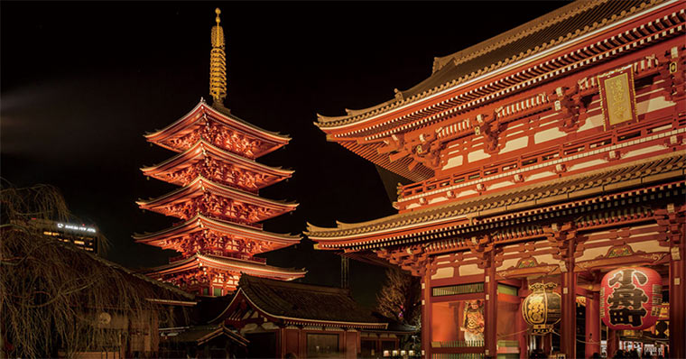
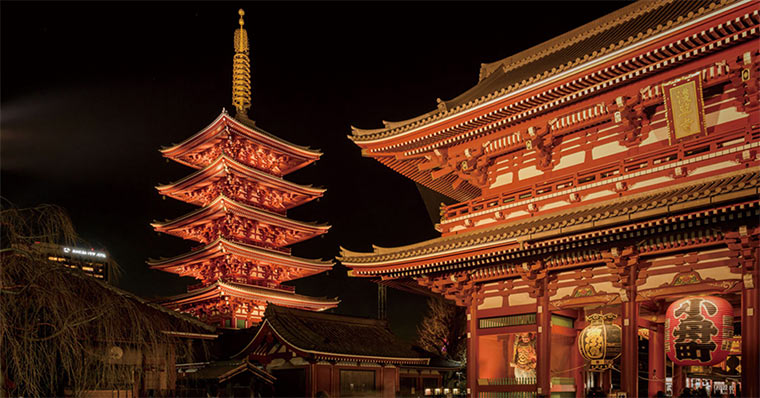

4 Days and 3 Nights Getaway
Price starts at €3,300 per person (excluding flights)
● Day 1
- 12:00PM – Arrive at Haneda/Narita, transfer to Shinjuku hotel
- 3:00PM – Walk through Shinjuku Gyoen National Garden
- 8:00PM – Izakaya dinner in Golden Gai
● Day 2
- 9:00AM – Visit to Meiji Shrine & Harajuku Takeshita Street
- 12:30PM – Lunch at Omotesandō Hills
- 3:00PM – TeamLab Planets digital art museum
- 7:00PM – Sushi omakase experience in Ginza
● Day 3
- 8:00AM – Tsukiji Outer Market food tasting
- 11:00AM – Asakusa and Sensō-ji temple visit
- 3:00PM – Shopping in Shibuya and optional Purikura photo booth
- 9:00PM – Rooftop drinks at Tokyo Midtown
● Day 4
- 9:00AM – Ride to observation deck of Tokyo Skytree
- 11:30AM – Farewell ramen lunch near Ueno Park
- 1:00PM – Check-out & airport transfer

 
